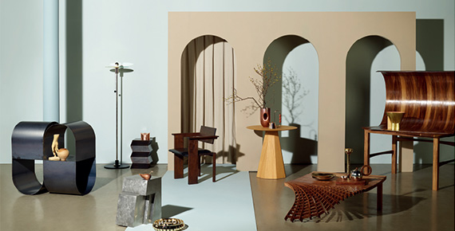
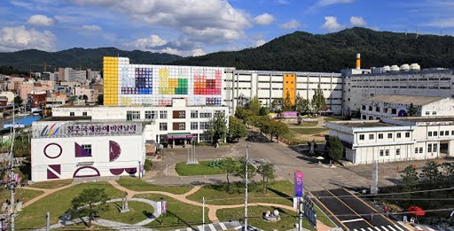

청주공예비엔날레 소개
사람의 가슴으로 읽어내는 아름다움의 가치, 사람의 손에 의해 진솔하게 다듬어지는 예술혼 '청주공예비엔날레'
STORY
청주공예비엔날레는 5천 년의 전통을 지닌 공예의 나라 한국을 세계에 알리기 위해 1999년부터 열린 행사로 전통공예와 현대공예가 조화된 창조와 화합의 마당을 경험할 수 있는 문화예술축제입니다. 21세기 공예예술의 메카이자 국제문화산업 관광도시로 도약하기 위해 청주시가 주최하고 있습니다.
도자, 목칠, 섬유, 금속 등 공예의 모든 분야를 총망라한 국제 종합 예술 행사로 국내·외 공예를 한자리에 모아 2년에 한 번 개최되고 있습니다. 현재 비엔날레는 매회 세계 60여 개국, 3천 여 명의 작가가 참여하고 30만 여 명의 관람객이 방문하는 세계 최대 규모 · 최고 수준의 공예비엔날레로 성장하였습니다.

1940년대 지어져 근ㆍ현대 역사유물로 불리며 65년의 역사를 간직하고 있는 청주 옛 연초제조창은 3천 여 명의 근로자들이 담배를 생산했던 곳으로 당시 한국에서 가장 큰 담배공장이었습니다. 그리고 일년에 200억 개비의 담배를 생산하는 청주시민들의 삶과 희망의 공간이었습니다.
하지만 산업화에 밀려 2004년 가동이 중단되었고, 더 이상 담배는 생산하지 않지만 공예비엔날레를 통해 문화로 지구촌이 하나되는 첫 출발의 장소가 되었습니다. 현재 연초제조창은 건물의 역사성을 보존하고, 시민을 위한 문화공간으로 탈바꿈하기 위해 한국공예관, 국립현대미술관으로 새롭게 거듭났습니다.

LOGO
역동적인 붓 터치는 백제의 기상을 상징하는 진취적인 힘의 상징이며, 세계로 뻗어 나가는 미래지향적인 도약을 나타냅니다. 그리고 공예에 관한 새로운 시각과 현대적 감성으로 비엔날레가 가져올 문화적 미래가치를 명확히 전달합니다.
빨강(태양), 파랑(하늘), 노랑(땅), 진회색(잠재력), 초록(산림)을 상징하는 5가지 색은 충북의 자연 친화적인 이미지를 함축하고 있으며, 전체적인 심볼의 조화는 청주의 기상을 나타내는 정신을 표출하고 있습니다.
VISION
- 인본성공예인력 양성
- 전문성실행체계구축
- 생동성진흥기반 창출
- 개방성도시·인력 교류
ORGANIZATION CHART
-
지원본부
- 인프라지원
- 비엔날레 재단
-
총괄부
- 총괄기획팀
- 국제사업팀
- 홍보마케팅팀
- 행사운영팀
-
전시부
- 전시팀
- 감독팀